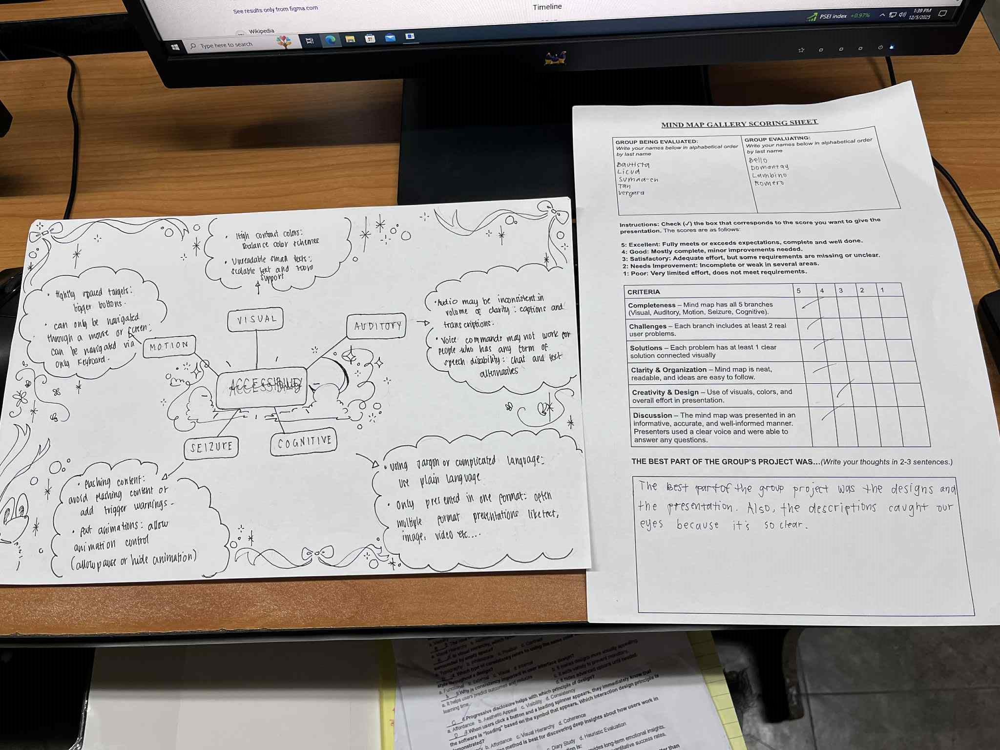
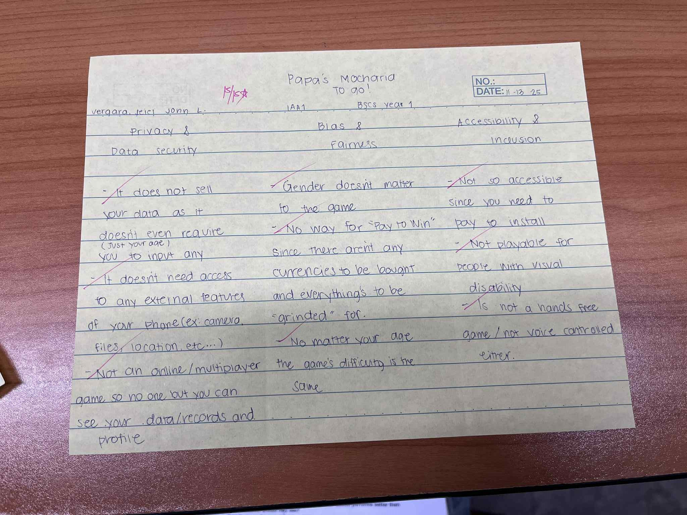
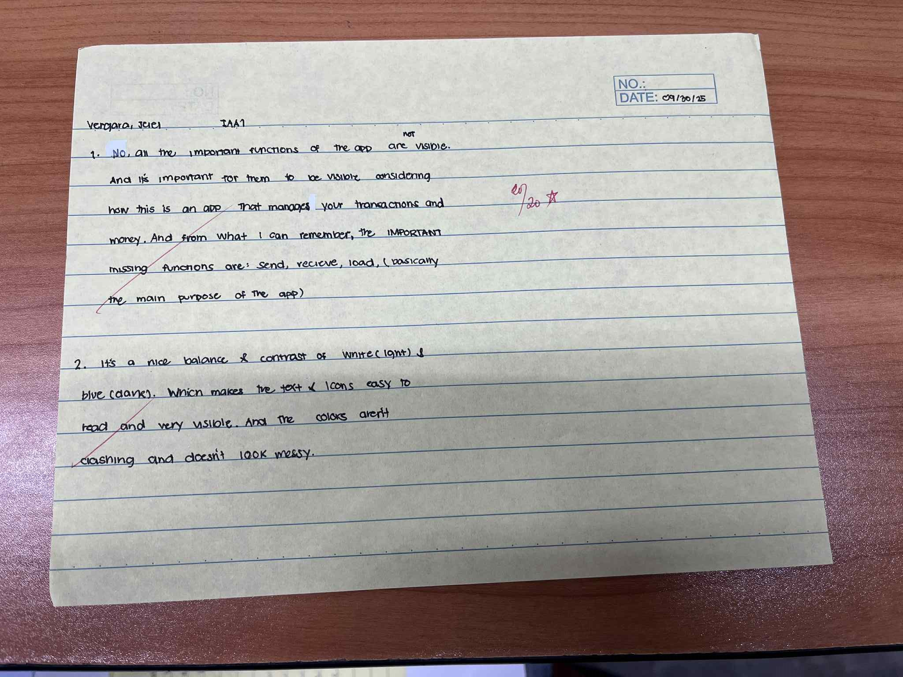
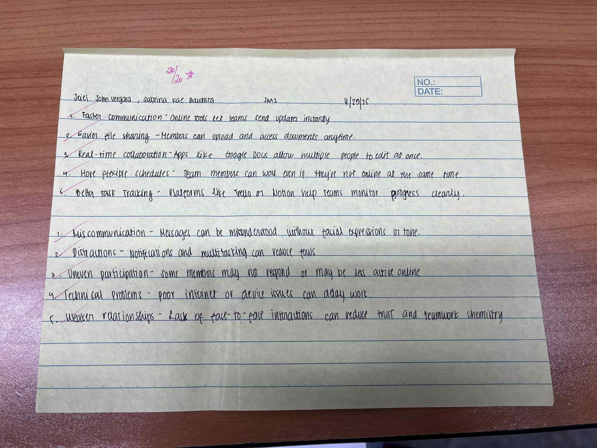

.JPG)
my skills
- Graphic Designing (Mainly Using iBisPaint)
- Easily Adaptable
- Fast Learner
- Efficient Worker
- Can keep to myself and mind my own business
- Low Maintenance
My Education
My Activity Gallery (Lecture)




My Activity Gallery (Lab)


My Works
More About me
Reflection
When I first enrolled in this course, I was nervous to delve into the subject Computer Science has to offer. Especially since most of my other classmates already had prior knowledge of Java, Coding, Binary, Python, Programming, Hardware, etc… But I went in fully blind which made me think if I was a bad student for not advanced reading beforehand or for enrolling in a course I barely have passion towards.
Classes started and I already felt like I was out of place like a sore thumb sticking out. I was still passing my classes but I’m not as well versed as the others in the subject. Unlike them, I had to do extensive research and watch tons of tutorials online just to get a concept most find simple. But when it came to HUMCOM(Human-Computer Interaction), it was actually a topic/lesson I understood with ease(Mostly because some were also common sense or are already in the words itself).
I also thought lab activities would kill me softly the same way INTRCS and PROGIT does(Love the instructors just not the activities..) but surprisingly the activities were fun since HTML was something taught to me in 12th grade and customizing and designing stuff was actually SO fun. Coding it all WAS a bit weird and foreign for me considering I usually use programs or applications like iBisPint, Canva or Adobe to edit content but seeing the hard work pay off and see the results of my coding actually feels pretty rewarding. Overall, my experience in this subject is purely positive, I cannot recall a single negative experience.